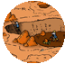
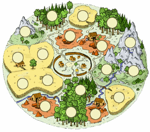
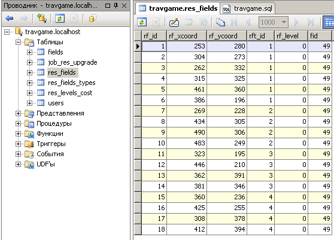
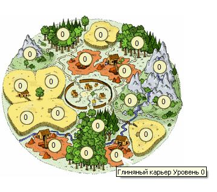
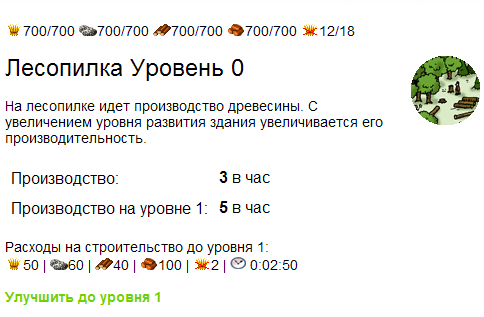
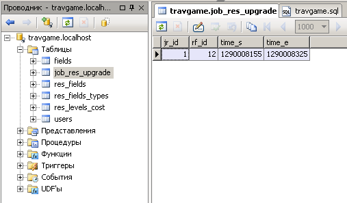
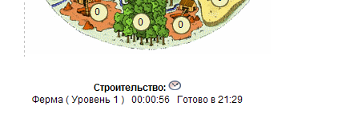

| |
Карта полей добычи
4.1.
Ресурсные поля
Здравствуйте, уважаемый коллега и
добро пожаловать на наше четвертое занятие, на котором мы вплотную
займемся экономикой нашего поселка. Любые военные действия и
строительство требуют вложения ресурсов и сегодня мы научимся их
производить. Более того, мы узнаем - как увеличивать доходность
ресурсных объектов, повышая их уровень.
Какие же ресурсы мы будем добывать? А вот какие:
|
 |
|
|
Лесопилка
(производство древесины) |
Глиняный карьер
(добыча глины) |
Железный рудник
(добыча руды) |
Ферма
(производство зерна) |
На текущем занятии мы создадим страничку для отображения всех
ресурсных полей, а также страничку детальной информации по каждому
полю, на которой сделаем механизм апгрейда этого поля (то есть
увеличения его уровня и как следствие - производства
соответствующего ресурса)
Мы также будем использовать пиктограммы для выведения сведений о
добыче ресурсов :
-
железо
- пшеница (зерно)
-
глина и
-
древесина
На фермах выращивают пшеницу и перерабатывают ее в зерно для
обеспечения продовольствием населения. С развитием фермы
увеличивается ее производительность.
На глиняном карьере добывают сырье глину. С
развитием глиняного карьера также увеличивается
его производительность.
На лесопильном заводе производят древесину. С
развитием лесопильного завода увеличивается и
производство этого вида ресурса.
На железных рудниках шахтеры добывают ценное
сырье – руду и перерабатывают ее в железо. С
развитием железного рудника, как Вы догадались,
увеличивается его производительность.
Вот как будет выглядеть местность с ресурсными
полями вокруг нашего поселка:

Рисунок 4.1.1
Конечно, сразу понятно, где какой ресурс добывается. В специально
отведенных кружочках мы будем выводить уровень
добычи этого вида ресурса. С ростом уровня
ресурсного поля будут увеличиваться и затраты на
его апгрейд. Но это стоит того! Ведь тогда
ресурсов будет добываться еще больше и мы очень
быстро окупим вложения средств в увеличение
уровня.
Давайте теперь сделаем в нашей базе
travgame
специальную табличку, которая опишет все типы
ресурсов, которые будут добываться в нашей игре.
Назовем эту табличку res_fields_types.
Вот она:
-- справочник типов ресурсных полей ---------------
CREATE TABLE `res_fields_types` (
rft_id bigint(20) unsigned NOT NULL auto_increment, /*ID*/
rft_name char(30),
rft_image char(30),
rft_description char(255),
PRIMARY KEY (`rft_id`)
) ENGINE=MyISAM DEFAULT CHARSET=cp1251;
Фрагмент 4.1.1
rft_id - это идентификатор ресурса.
rft_name - название ресурса
rft_image - картинка этого вида
ресурса для отображения в браузере
rft_description - краткое описание
ресурса .
Давайте заполним эту таблицу реальными данными:
insert into res_fields_types (rft_id, rft_name, rft_image, rft_description)
values (1,'Ферма','img/res/r_grain.png',
'На фермах выращивают зерно для обеспечения продовольствием населения...');
insert into res_fields_types (rft_id, rft_name, rft_image, rft_description)
values (2,'Железный рудник','img/res/r_ore.png',
'На железных рудниках шахтеры добывают ценное сырье – железо.');
insert into res_fields_types (rft_id, rft_name, rft_image, rft_description)
values (3,'Лесопилка','img/res/r_wood.png',
'На лесопилке идет производство древесины...');
insert into res_fields_types (rft_id, rft_name, rft_image, rft_description)
values (4,'Глиняный карьер','img/res/r_clay.png',
'На глиняном карьере добывают сырье глину...');
Фрагмент 4.1.2 Таким образом мы добавили четыре строки в нашу таблицу
res_fields_types , где описали все виды
ресурсов, которые будем использовать в нашей с
Вами игре.
4.2.
Таблица добычи ресурсов
В прошлом пункте мы создали таблицу описаний ресурсов - то
есть, по сути, это справочная информация. Теперь перед нами стоит
задача описания отдельных ресурсных полей для каждого поселка в
игре. Давайте попробуем это сделать:
-- таблица ресурсных полей для каждого поселка ---------------
CREATE TABLE `res_fields` (
rf_id bigint(20) unsigned NOT NULL auto_increment, /*ID ресурсного поля*/
rf_xcoord int,
rf_ycoord int,
rft_id int, /*тип рес.поля: 1-ферма,2-рудник,3-лес,4-глина*/
rf_level int default 0, /* уровень ресурсного поля */
fid int default 0, /*связан с принадлежащим игроку полем общей карты*/
PRIMARY KEY (`rf_id`)
) ENGINE=MyISAM DEFAULT CHARSET=cp1251;
Фрагмент 4.2.1rf_id - просто
идентификатор ресурсного поля
rf_xcoord - координата Х -
выведения уровня поля на карте ресурсных полей
rf_ycoord - координата У -
выведения уровня поля на карте ресурсных полей
rft_id - это идентификатор из справочник типов
ресурсных полей (res_fields_types)
и может принимать значения (1,2,3,4)
rf_level - уровень
ресурсного поля (чем выше уровень - тем выше добыча)
fid - идентификатор из таблицы участков на глобальной
карте (fields), т.е. мы закрепляем
ресурсные поля за своим поселком.
В нашей учебной игре мы для простоты
будем считать, что все поселки
на глобальной карте обладают одинаковым набором
ресурсных полей (см. рисунок 4.1.1)
- то есть по 4 поля для глины, руды и леса и 6 полей для
зерна.
И сейчас нам осталось
создать процедуру для генерации всех ресурсных полей для
указанного
поселка, в котором обитает один из зарегистрировавшихся
игроков.
Назовем эту процедуру makeresfields.
-- процедура по генерированию ресурсных полей для поселка ----------
create procedure makeresfields (p_fid int)
BEGIN
-- Фермы
insert into res_fields (rf_xcoord,rf_ycoord,rft_id,fid) values (253,280,1,p_fid);
insert into res_fields (rf_xcoord,rf_ycoord,rft_id,fid) values (304,273,1,p_fid);
insert into res_fields (rf_xcoord,rf_ycoord,rft_id,fid) values (262,332,1,p_fid);
insert into res_fields (rf_xcoord,rf_ycoord,rft_id,fid) values (315,325,1,p_fid);
insert into res_fields (rf_xcoord,rf_ycoord,rft_id,fid) values (461,360,1,p_fid);
insert into res_fields (rf_xcoord,rf_ycoord,rft_id,fid) values (386,196,1,p_fid);
-- Рудники
insert into res_fields (rf_xcoord,rf_ycoord,rft_id,fid) values (269,228,2,p_fid);
insert into res_fields (rf_xcoord,rf_ycoord,rft_id,fid) values (434,305,2,p_fid);
insert into res_fields (rf_xcoord,rf_ycoord,rft_id,fid) values (490,306,2,p_fid);
insert into res_fields (rf_xcoord,rf_ycoord,rft_id,fid) values (483,249,2,p_fid);
-- Лес
insert into res_fields (rf_xcoord,rf_ycoord,rft_id,fid) values (323,195,3,p_fid);
insert into res_fields (rf_xcoord,rf_ycoord,rft_id,fid) values (446,210,3,p_fid);
insert into res_fields (rf_xcoord,rf_ycoord,rft_id,fid) values (362,391,3,p_fid);
insert into res_fields (rf_xcoord,rf_ycoord,rft_id,fid) values (381,346,3,p_fid);
-- Глина
insert into res_fields (rf_xcoord,rf_ycoord,rft_id,fid) values (360,236,4,p_fid);
insert into res_fields (rf_xcoord,rf_ycoord,rft_id,fid) values (425,255,4,p_fid);
insert into res_fields (rf_xcoord,rf_ycoord,rft_id,fid) values (308,378,4,p_fid);
insert into res_fields (rf_xcoord,rf_ycoord,rft_id,fid) values (412,394,4,p_fid);
END;
Фрагмент 4.2.2Как Вы видите, в нашу процедуру
передается один аргумент (p_fid целого типа (int))
-
и это идентификатор
поселка.
Далее мы повторяем sql-оператор
insert для вставки в таблицу res_fields
6 полей зерна, 4 рудников, 4 лесопилок и 4
глиняных карьеров. Координаты
rf_xcoord и
rf_ycoord подбираем
экспериментально, чтоб уровни rf_level
(который по умолчанию равен нулю)
попадали в кружочки (рис. 4.1.1).
Поле rft_id устанавливаем в 1,2,3,4 (для
каждого ресурса свой номер - согласно справочнику типов полей
res_fields_types ),
ну и fid устанавливаем в значение, передаваемое в качестве аргумента
в нашу процедуру - т.е. в идентификатор
поселка.
Таким образом, при регистрации
нового игрока в игре и назначении ему поселка (участка карты в
таблице fields мы должны
позаботиться и вызвать эту процедуру, передав ей в качестве
аргумента идентификатор поселка этого нового игрока)
Давайте добавим все таблицы, созданные в текущем занятии, а
также процедуру makeresfields в наш скрипт
travgame.sql и также пропишем вызов этой процедуры в нашем
скрипте:
CALL makeresfields(49);
Фрагмент 4.2.3Число 49 , как вы догадались,
это идентификатор поселка для нашего игрока с именем
test.
Выполните наш расширившийся скрипт
travgame.sql и Вы увидите как данные добавились в новую
созданную таблицу res_fields.

Рисунок 4.2.1
Давайте теперь сделаем новую страничку в
нашей игре, для вывода карты добычи ресурсных полей.
Назовем ее - res.php.
Для этой странички сделаем секцию
проверки авторизации, как ранее для game.php.
(Кстати, game.php мы переименуем в
map.php - чтоб ее название четко
соответствовало ее назначению - показывать глобальную карту
участков). Кроме этого мы добавим слой, в
котором будет находится меню верхнего
уровня (по сути - это пара картинок, чтоб игрок мог переходить между
картой, ресурсами и строениями в поселке).
Вот этот фрагмент на HTML, который мы
добавим в файл game.php. (Кстати,
неплохо бы его добавить и в map.php)
<div id="header">
<div id="inheader">
<a href="res.php" id="m1"><img src="img/menu_item1.jpg" class="menu_img" title="Обзор деревни" /></a>
<a href="" id="m2"><img src="img/menu_item2.jpg" class="menu_img" title="Центр деревни" /></a>
<a href="map.php" id="m3"><img src="img/menu_item3.jpg" class="menu_img" title="Карта" /></a>
<a href="" id="m4"><img src="img/menu_item4.jpg" class="menu_img" title="Статистика" /></a>
<a href="" id="m5"><img src="img/menu_item5.jpg" class="menu_img" title="Отчеты" /></a>
</div>
</div>
Фрагмент 4.2.4Вот картинки меню, которые мы используем:
Как Вы видите из фрагмента 4.2.4 - не все пункты меню пока
задействованы, а только первый (ссылка на
res.php ) и третий (ссылка на
map.php). Теперь давайте сделаем
вывод в res.php карты ресурсных полей и числа уровней
каждого из них.
$fid = $_SESSION['fid'];
$res = mysql_query("SELECT rf_id, rf_xcoord, rf_ycoord, rf_level, rft_name FROM res_fields rf
inner join res_fields_types rft on rft.rft_id = rf.rft_id
WHERE f.fid = $fid", $link )
or die("Query failed : " . mysql_error());
while ($row = mysql_fetch_array( $res )) {
$rf_x = $row["rf_xcoord"];
$rf_y = $row["rf_ycoord"];
$rf_level = $row["rf_level"];
$rf_id = $row["rf_id"];
$rft_name = $row["rft_name"];
echo '<div style="position:absolute;left:'.$rf_x.'px;top:'.$rf_y.'px;z-index:1" title="'.$rft_name.' Уровень '.$rf_level.'"
onclick="res_details('.$rf_id.')" style="cursor:hand">'.$rf_level.'</div>';
}
Фрагмент 4.2.5
В 1 строке фрагмента 4.2.5 мы получаем из сессионной переменной
идентификатор поселка, который затем подставляем в
sql-запрос (строки 3-6). Этот
sql-запрос объединяет две таблицы (res_fields,
res_fields_types ), из второй мы узнаем название ресурса
(например - Железный рудник (поле
rft_name)), а из первой - все
остальное (уровень, координаты). Все эти данные нам нужны, чтоб
отобразить уровень каждого ресурсного поля и при наведении на него
мыши - всплыла подсказка с названием этого поля. Из строк 14-15 Вы
видите, что эти данные для каждого поля выводятся в виде слоя (<div>),
координаты которого соответствуют координатам из таблицы res_fields.
Более того, по клику мышью на этом слое, вызывается некая
JavaScript функция res_details
в которую в качестве аргумента передается идентификатор ресурсного
поля - $rf_id. Это нам понадобится чуть
позже для вывода странички подробной информации о каждом ресурсном
поле, а сейчас мы просто покажем, что у нас получилось на экране,
когда мы откроем в браузере страничку res.php.

Рисунок 4.2.2
4.3.
Таблица апгрейдов и затрат
Ресурсные поля нулевого уровня приносят не очень много ресурсов и
вскоре игроку понадобится их развитие - то есть увеличение их уровня
и, соответственно - производства. Однако увеличение уровня, как мы
уже упоминали ранее - требует вложения ресурсов на апгрейд.
Соответственно перед нами стоит задача - создать справочную таблицу,
где задать расходы ресурсов на апгрейд ресурсных полей разного типа.
Сказано - сделано! Создаем таблицу с названием res_levels_cost.
Вот эта таблица:
-- справочник уровней, стоимости апгрейдов, потребления ресурсных полей ---------------
CREATE TABLE `res_levels_cost` (
rlc_id bigint(20) unsigned NOT NULL auto_increment, /*ID*/
rft_id int,
rlc_level int, /* уровень ресурсного поля*/
rlc_grain int, /* сколько зерна для перехода на этот уровень */
rlc_ore int, /* сколько руды для перехода на этот уровень */
rlc_wood int, /* сколько леса для перехода на этот уровень */
rlc_clay int, /* сколько глины для перехода на этот уровень */
rlc_cons int, /* потребление */
rlc_prod int, /* производство */
rlc_time_upgrade CHAR(10), /* время апгрейда до след. уровня */
PRIMARY KEY (`rlc_id`)
) ENGINE=MyISAM DEFAULT CHARSET=cp1251;
Фрагмент 4.3.1
Что же за поля, содержатся в нашей новой таблице и для чего они
нужны?
rlc_id - это просто уникальный идентификатор
rft_id - поле, которое соответствует одноименному полю
из справочной таблицы
res_fields_types
rlc_level - уровень ресурсного поля
rlc_grain - сколько необходимо потратить зерна, для апгрейда
ресурсного поля до этого уровня
rlc_ore - сколько необходимо потратить руды, для
апгрейда ресурсного поля до этого уровня
rlc_wood - сколько необходимо потратить древесины, для
апгрейда ресурсного поля до этого уровня
rlc_clay - сколько необходимо потратить глины, для
апгрейда ресурсного поля до этого уровня
rlc_cons - потребление зерна на этом уровне
rlc_prod - производство этого ресурса на этом уровне
rlc_time_upgrade - время в формате часы:минуты:секунды
для осуществления апгрейда
Давайте заполним эту таблицу данными хотя бы до 5 уровня для каждого
типа (ферма,лес,глина,руда) ресурсного поля. Напишем следующие
sql-операторы вставки записей в таблицу res_levels_cost
для этих целей.
/*--------------------------- первые 5 уровней развития ресурсных полей ----------------------*/
/*ферма*/
insert into res_levels_cost(rft_id,rlc_level,rlc_wood,rlc_clay,rlc_ore,rlc_grain,rlc_cons,rlc_prod,rlc_time_upgrade)
values (1,0,0,0,0,0,0,3,'0:00:00');
insert into res_levels_cost(rft_id,rlc_level,rlc_wood,rlc_clay,rlc_ore,rlc_grain,rlc_cons,rlc_prod,rlc_time_upgrade)
values (1,1,70,90,70,20,0,5,'0:01:40');
insert into res_levels_cost(rft_id,rlc_level,rlc_wood,rlc_clay,rlc_ore,rlc_grain,rlc_cons,rlc_prod,rlc_time_upgrade)
values (1,2,115,150,115,35,0,9,'0:04:50');
insert into res_levels_cost(rft_id,rlc_level,rlc_wood,rlc_clay,rlc_ore,rlc_grain,rlc_cons,rlc_prod,rlc_time_upgrade)
values (1,3,195,250,195,55,0,15,'0:10:00');
insert into res_levels_cost(rft_id,rlc_level,rlc_wood,rlc_clay,rlc_ore,rlc_grain,rlc_cons,rlc_prod,rlc_time_upgrade)
values (1,4,325,420,325,95,0,22,'0:18:20');
insert into res_levels_cost(rft_id,rlc_level,rlc_wood,rlc_clay,rlc_ore,rlc_grain,rlc_cons,rlc_prod,rlc_time_upgrade)
values (1,5,545,700,545,155,0,33,'0:31:30');
/*рудник*/
insert into res_levels_cost(rft_id,rlc_level,rlc_wood,rlc_clay,rlc_ore,rlc_grain,rlc_cons,rlc_prod,rlc_time_upgrade)
values (2,0,0,0,0,0,1,3,'0:00:00');
insert into res_levels_cost(rft_id,rlc_level,rlc_wood,rlc_clay,rlc_ore,rlc_grain,rlc_cons,rlc_prod,rlc_time_upgrade)
values (2,1,100,80,30,60,2,5,'0:05:00');
insert into res_levels_cost(rft_id,rlc_level,rlc_wood,rlc_clay,rlc_ore,rlc_grain,rlc_cons,rlc_prod,rlc_time_upgrade)
values (2,2,165,135,50,100,3,9,'0:10:10');
insert into res_levels_cost(rft_id,rlc_level,rlc_wood,rlc_clay,rlc_ore,rlc_grain,rlc_cons,rlc_prod,rlc_time_upgrade)
values (2,3,280,225,85,165,4,15,'0:18:40');
insert into res_levels_cost(rft_id,rlc_level,rlc_wood,rlc_clay,rlc_ore,rlc_grain,rlc_cons,rlc_prod,rlc_time_upgrade)
values (2,4,465,375,140,280,6,22,'0:32:00');
insert into res_levels_cost(rft_id,rlc_level,rlc_wood,rlc_clay,rlc_ore,rlc_grain,rlc_cons,rlc_prod,rlc_time_upgrade)
values (2,5,780,620,235,465,8,33,'0:53:30');
/*лес*/
insert into res_levels_cost(rft_id,rlc_level,rlc_wood,rlc_clay,rlc_ore,rlc_grain,rlc_cons,rlc_prod,rlc_time_upgrade)
values (3,0,0,0,0,0,1,3,'0:00:00');
insert into res_levels_cost(rft_id,rlc_level,rlc_wood,rlc_clay,rlc_ore,rlc_grain,rlc_cons,rlc_prod,rlc_time_upgrade)
values (3,1,40,100,60,50,2,5,'0:02:50');
insert into res_levels_cost(rft_id,rlc_level,rlc_wood,rlc_clay,rlc_ore,rlc_grain,rlc_cons,rlc_prod,rlc_time_upgrade)
values (3,2,65,165,85,100,3,9,'0:06:50');
insert into res_levels_cost(rft_id,rlc_level,rlc_wood,rlc_clay,rlc_ore,rlc_grain,rlc_cons,rlc_prod,rlc_time_upgrade)
values (3,3,110,280,140,165,4,15,'0:13:10');
insert into res_levels_cost(rft_id,rlc_level,rlc_wood,rlc_clay,rlc_ore,rlc_grain,rlc_cons,rlc_prod,rlc_time_upgrade)
values (3,4,185,465,235,280,6,22,'0:23:20');
insert into res_levels_cost(rft_id,rlc_level,rlc_wood,rlc_clay,rlc_ore,rlc_grain,rlc_cons,rlc_prod,rlc_time_upgrade)
values (3,5,310,780,390,465,8,33,'0:39:40');
/*глина*/
insert into res_levels_cost(rft_id,rlc_level,rlc_wood,rlc_clay,rlc_ore,rlc_grain,rlc_cons,rlc_prod,rlc_time_upgrade)
values (4,0,0,0,0,0,1,3,'0:00:00');
insert into res_levels_cost(rft_id,rlc_level,rlc_wood,rlc_clay,rlc_ore,rlc_grain,rlc_cons,rlc_prod,rlc_time_upgrade)
values (4,1,80,40,80,50,2,5,'0:02:50');
insert into res_levels_cost(rft_id,rlc_level,rlc_wood,rlc_clay,rlc_ore,rlc_grain,rlc_cons,rlc_prod,rlc_time_upgrade)
values (4,2,135,65,135,85,3,9,'0:07:10');
insert into res_levels_cost(rft_id,rlc_level,rlc_wood,rlc_clay,rlc_ore,rlc_grain,rlc_cons,rlc_prod,rlc_time_upgrade)
values (4,3,225,110,225,140,4,15,'0:14:00');
insert into res_levels_cost(rft_id,rlc_level,rlc_wood,rlc_clay,rlc_ore,rlc_grain,rlc_cons,rlc_prod,rlc_time_upgrade)
values (4,4,375,185,375,235,6,22,'0:25:00');
insert into res_levels_cost(rft_id,rlc_level,rlc_wood,rlc_clay,rlc_ore,rlc_grain,rlc_cons,rlc_prod,rlc_time_upgrade)
values (4,5,620,310,620,390,8,33,'0:42:30');
Фрагмент 4.3.2И Выше приведенного фрагмента
видно, что с ростом уровня (поле rlc_level) любого из четырех типов
(поле rft_id) ресурсных полей, затраты на апгрейд до этого уровня
растут (значения в полях rlc_wood, rlc_clay, rlc_ore, rlc_grain).
Кроме этого растет также и время (поле rlc_time_upgrade),
затрачиваемое на процедуру этого апгрейда.
Что ж, давайте сделаем новую страничку нашей с Вами стратегической
игры, где будет показывать детальную информацию по выбранному
ресурсному полю, в том числе и ресурсы затрачиваемые на апгрейд до
следующего уровня этого ресурсного поля. Наш новый файл для этих
целей назовем resb.php.
Кроме знакомой для нас уже проверки авторизации (мы ее помним
еще по файлу map.php ), давайте в
нашем новом файле resb.php сделаем
показ имеющихся у игрока в текущем поселке ресурсов. Вы помните еще
из таблицы fields, что изначально их дается по 700 каждого
типа. Давайте выводить их на экран, чтоб игрок всегда видел,
чем он располагает. Для этих целей напишем функцию, теперь уже
на языке PHP. А так как в дальнейшем
мы будем выводить количество
ресурсов не только в файле resb.php,
но и в некоторых других, предлагается использовать подключаемый
файл, где мы будем держать все наши необходимые функции в одном
месте. Этот файл - functions.inc.php
и мы уже использовали его во втором уроке.
Этот файл мы подключаем к другим разным файлам (resb.php,
resb.php,
map.php и т.д.) и будем многократно использовать
хранящиеся в нем функции. Директива подключения Вам известна:
@include("functions.inc.php");
Фрагмент 4.3.3
Вначале создадим в файле functions.inc.php
функцию get_res, которая считывает
количество ресурсов из таблицы fields.
function get_res( $p_fid ){
$result = mysql_query("SELECT f_grain, f_ore, f_wood, f_clay FROM fields where fid = $p_fid")
or die("Query failed : " . mysql_error());
$row = mysql_fetch_array( $result );
$a_res['grain'] = $row["f_grain"];
$a_res['ore'] = $row["f_ore"];
$a_res['wood'] = $row["f_wood"];
$a_res['clay'] = $row["f_clay"];
return ( $a_res );
}
Фрагмент 4.3.4.
Здесь все предельно просто - функция получает в качестве аргумента
идентификатор поселка ($p_fid) и использует его в
sql-запросе для извлечения количества
каждого из ресурсов из таблицы fields. Затем все эти значения
помещаются в массив $a_res, который возвращается оператором
return.Сейчас мы сразу проверим ее в
действии, так как теперь добавим функцию
show_res, которая выведет на страницу в браузере количество
ресурсов, которыми располагает игрок:
// показываем ресурсы для поля
function show_res( $p_fid ){
global $f_grain;
global $f_ore;
global $f_wood;
global $f_clay;
$warehouse_capacity = 700; // вместимость склада
$barn_capacity = 700; // вместимость амбара
$a_res = get_res( $p_fid );
$f_grain = $a_res["grain"];
$f_ore = $a_res["ore"];
$f_wood = $a_res["wood"];
$f_clay = $a_res["clay"];
echo '<div style="position:absolute left:200px; top:50px">'.'<img src="img/res/grain.png">'.$f_grain.'/'.$barn_capacity.
' <img src="img/res/ore.png">'
.$f_ore.'/'.$warehouse_capacity.' <img src="img/res/wood.png">'.$f_wood.'/'.$warehouse_capacity.
' <img src="img/res/clay.png">'.$f_clay.'/'
.$warehouse_capacity.' <img src="img/res/cons.png">'.get_res_cons( $p_fid ).'/'.get_prod( $p_fid, 1 ).'</div>';
}
Фрагмент 4.3.5.Эта функция основывается
на данных, получаемых от функции get_res
и использует, пока что вручную прописанные в коде функции значения
вместимости амбара и склада. Когда мы перейдем к созданию зданий в
нашем поселке и построим склад и амбар - нам уже это не понадобится.
Далее функция show_res выводит все эти
значения в виде слоя (<div>)
Вот как это выглядит:
Рисунок 4.3.1
И если с с первыми четырьмя парами числе все понятно (это количество
ресурса/вместимость объекта), то что же такое 12/18 ? Конечно же Вы
в фрагменте 4.3.5 увидели еще две незнакомые функции
get_res_cons и
get_prod, которые судя по всему и выводят эти числа 12/18 на
экран. Рассмотрим это в следующем пункте.
4.4.
Производство и потребление
Начнем с функции get_prod. Она
подсчитывает общее количество ресурсов выбранного типа в единицу
времени (а именно - в час). Поэтому первый ее аргумент -
идентификатор поселка, а второй - тип ресурса. Вот эта функция:
// какова продукция выбранного ресурса в час в поселке
function get_prod( $p_fid, $p_res_type ){
global $link;
$res = mysql_query("SELECT
sum(rlc_prod) AS sum_prod,
rlc.rft_id,
rlc.rlc_level
FROM
res_levels_cost rlc
INNER JOIN res_fields rf ON (rf.rft_id = rlc.rft_id)
AND (rf.rf_level = rlc.rlc_level)
WHERE
fid = $p_fid and rf.rft_id = $p_res_type
GROUP BY
rlc.rft_id, rlc.rlc_level", $link )
or die("Query failed : " . mysql_error());
$row = mysql_fetch_array( $res );
return( $row["sum_prod"] );
}
Фрагмент 4.4.1.Sql-запрос
в этой функции объединяет две таблицы res_fields и
res_levels_cost. Связываются эти таблицы по двум параметрам - типу
ресурсов (rf.rft_id = rlc.rft_id) и уровню ресурсного поля (rf.rf_level
= rlc.rlc_level). SQL-функция
sum суммирует количество выработки
ресурса, содержащееся в поле rlc_prod. В итоге функция
get_prod возвращает величину этой
суммы. Понятно, что во фрагменте 4.3.5 мы используем эту функцию для
отображения общего производства зерна в час (get_prod(
$p_fid, 1 ) - 1 это тип ресурса - зерно (помните справочную таблицу
res_fields_types ?))
Теперь, что касается функции get_res_cons.
Эта функция показывает общее потребление зерна. Потребляет зерно и
ресурсные постройки и здания в поселке, которыми мы будем заниматься
на следующих занятиях.
Вот эта функция:
// какое потребление зерна ресурсными полями? (без построек в городе)
function get_res_cons( $p_fid ){
global $link;
$res = mysql_query("SELECT
sum(rlc_cons) AS sum_cons,
rlc.rft_id,
rlc.rlc_level
FROM
res_levels_cost rlc
INNER JOIN res_fields rf ON (rf.rft_id = rlc.rft_id)
AND (rf.rf_level = rlc.rlc_level)
WHERE fid = $p_fid", $link )
or die("Query failed : " . mysql_error());
$row = mysql_fetch_array( $res );
return( $row["sum_cons"] );
}
Фрагмент 4.4.2.Эта функция идентична
предыдущей, только суммирует не поле rlc_prod, а поле
rlc_cons (то есть - потребление, а не производство). И в этой
функции нет проверки по типу ресурса - так как все ресурсные поля
(даже те, которые сами производят зерно, т.е. фермы) потребляют
зерно, и чем выше уровень этого поля, тем выше потребление. Переводя
на простой язык - работники, занятые на сельхозработах, в шахтах,
лесопилках и карьерах - хотят есть!
Что ж, наступило время доделать файл resb.php,
который, если Вы не забыли должен, по нашему с Вами замыслу,
выводить детальную информацию по выбранному ресурсному полю, и
показывать, в том числе и ресурсы, затрачиваемые на апгрейд до
следующего уровня этого ресурсного поля.
Далее мы приведем фрагмент этого файла, который выводит на экран эту
информацию:
$fid = $_SESSION['fid']; // поселок
show_res( $fid );
// Узнаем сколько производство для этого ресурсного поля текущего левела
$res = mysql_query("SELECT rlc_cons, rlc_prod, rf_level from res_fields rf inner join res_levels_cost rlc
on rf.rft_id=rlc.rft_id
and rf.rf_level = rlc.rlc_level where fid=$fid and rf_id=$rf_id", $link )
or die("Query failed : " . mysql_error());
$row = mysql_fetch_array( $res );
$rlc_cons = $row["rlc_cons"];
$rlc_prod = $row["rlc_prod"];
$rf_level = $row["rf_level"];
// Узнаем сколько ресурсов нужно для след.левела этого ресурсного поля
$res = mysql_query("SELECT rlc_cons, rlc_prod, rf.rf_id, rf.rf_level+1 new_level, rlc_grain, rlc_ore, rlc_wood, rlc_clay, rlc_time_upgrade,
rft_image, rft_description,rft_name
from res_fields rf
inner join res_levels_cost rlc on rf.rft_id=rlc.rft_id
inner join res_fields_types rft on rft.rft_id=rf.rft_id
and (rf.rf_level+1) = rlc.rlc_level where fid=$fid and rf_id=$rf_id", $link )
or die("Query failed : " . mysql_error());
$row = mysql_fetch_array( $res );
$new_level = $row["new_level"];
$rlc_grain = $row["rlc_grain"];
$rlc_ore = $row["rlc_ore"];
$rlc_wood = $row["rlc_wood"];
$rlc_clay = $row["rlc_clay"];
$rlc_cons_new = $row["rlc_cons"];
$rlc_prod_new = $row["rlc_prod"];
$rft_name = $row["rft_name"];
$rft_image = $row["rft_image"];
$rft_description = $row["rft_description"];
$rlc_time_upgrade = $row["rlc_time_upgrade"];
$rf_id = $row["rf_id"];
echo '<br><img src="'.$rft_image.'" align="right">';
echo "<span class='res_header'>".$rft_name." Уровень ".$rf_level."</span><br><br>";
echo $rft_description."<br><br>";
echo '<table cellpadding="5" cellspacing="1" id="build_value"><tr>
<td >Производство:</td>
<td ><b>'.$rlc_prod.'</b> в час</td>
</tr>
<tr>
<td >Производство на уровне '.($rf_level+1).':</td>
<td ><b>'.$rlc_prod_new.'</b> в час</td>
</tr>
</table>';
echo "<br>Расходы на строительство до уровня $new_level:<br>";
echo '<img src="img/res/grain.png">'.$rlc_grain.' | <img src="img/res/ore.png">'.$rlc_ore.' |
<img src="img/res/wood.png">'.$rlc_wood.' |
<img src="img/res/clay.png">'.$rlc_clay.' | <img src="img/res/cons.png">'.$rlc_cons_new.' |
<img src="img/res/time.png"> '
.$rlc_time_upgrade.'<br><br>';
//echo 'Улучшить до уровня '.($rf_level+1);
if( allow_upgrade_res_field( $rf_id ) ){
if( !res_upgrade_in_progress( $fid ) )
echo '<a class="build" href="res.php?p_rf_id='.$rf_id.'">Улучшить до уровня '.($rf_level+1).'</a>';
else echo '<font color="#CCCCCC">Строители сейчас заняты!</color>';
} else {
echo 'Не хватает ресурсов!';
}
Фрагмент 4.4.3Во строке 2 фрагмента
4.3.8 мы как раз выводим сведения о
количестве ресурсов. В запросе (строки 5-8) мы узнаем производство
этого вида ресурса на текущем уровне (знакомая связка между
таблицами rf.rf_level = rlc.rlc_level) а вот во втором запросе
узнаем затраты ресурсов на апгрейд, а также потребление,
производство и время на этот апгрейд для следующего уровня (
(rf.rf_level+1) = rlc.rlc_level ). Всю полученную информацию из этих
запросов мы аккуратненько выводим на экран в виде таблички или
просто в виде строчек. Более того, мы создаем ссылку, нажав на
которую игрок может приступить к апгрейду этого поля (строка 58). Но
перед этим проводятся несколько проверок функциями
allow_upgrade_res_field и
res_upgrade_in_progress. Первую функцию
мы рассмотрим сейчас, а вторую чуть позже, так как она связана с
необходимости создания еще одной таблицы в базе данных - таблицы
очереди апгрейдов!.
А вот функция allow_upgrade_res_field
просто проверяет, достаточно ли у игрока ресурсов в поселке, чтоб
провести апгрейд? Вот как она выглядит:
function allow_upgrade_res_field( $rf_id ){
global $link;
$fid = $_SESSION['fid'];
$retv = false;
// Узнаем сколько ресурсов нужно для след.левела этого ресурсного поля
$query = "SELECT rlc_grain,
rlc_ore,
rlc_wood,
rlc_clay
from res_fields rf
inner join res_levels_cost rlc on rf.rft_id=rlc.rft_id
and (rf.rf_level+1) = rlc.rlc_level
where fid=$fid and rf_id=$rf_id";
$res = mysql_query( $query, $link ) or die("Query failed : " .mysql_error());
// это - сколько нужно ресов, чтоб сделать апгрейд
$row = mysql_fetch_array( $res );
$rlc_grain = $row["rlc_grain"];
$rlc_ore = $row["rlc_ore"];
$rlc_wood = $row["rlc_wood"];
$rlc_clay = $row["rlc_clay"];
// А это - сколько у нас есть в наличии
$a_res = get_res( $fid );
$f_grain = $a_res["grain"];
$f_ore = $a_res["ore"];
$f_wood = $a_res["wood"];
$f_clay = $a_res["clay"];
if ( ($rlc_grain <= $f_grain) &&
($rlc_ore <= $f_ore) &&
($rlc_wood <= $f_wood) &&
($rlc_clay <= $f_clay) ) {
$retv = true; // всех типов ресурсов достаточно для апгрейда
} else {
$retv = false; // не хватает одного или более видов ресурсов....
}
return ( $retv );
}
Фрагмент 4.4.4Функция получает на входе идентификатор ресурсного
поля из таблицы res_fields. И по нему в запросе (строки 6-14) мы
узнаем затраты ресурсов на апгрейд этого поля до следующего уровня.
В строках с 19-22 мы для удобства сохраняем эти значения в
соответствующие переменные. Далее уже знакомая нам функция
get_res возвращает количество доступных
игроку ресурсов в текущем поселке. В строках 32-35 фрагмента 4.3.9
мы сравниваем значения необходимых и имеющихся ресурсов и если
имеющихся ресурсов хватает возвращаем true,
если нет - false.
Так вот, если allow_upgrade_res_field
в фрагменте 4.3.9 вернет false мы
выведем на экран надпись - "Не хватает ресурсов". Давайте посмотрим
на страничку resb.php, как она выглядит в
браузере (мы нажали на ресурсное поле с лесопилкой).

Рисунок 4.4.2
4.5.
Очередь строительства и улучшений
Как Вы уже наверно догадались, апгрейд ресурсного поля
занимает определенное время. Эти временные интервалы хранятся в
таблице res_levels_cost. Посему, чтоб зарезервировать время
для апгрейда создадим новую табличку в нашей базе, которую назовем
job_res_upgrade. Вот как выглядит скрипт для ее создания:
/*Таблица очереди апгрейдов ресурсных полей */
CREATE TABLE `job_res_upgrade` (
jr_id bigint(20) unsigned NOT NULL auto_increment, /*ID задания на апгрейд*/
rf_id bigint(20) unsigned NOT NULL, /*ID поля из таблицы res_fields*/
time_s bigint DEFAULT 0, /*время начала апгрейда в сек. Эпохи. (php time) */
time_e bigint DEFAULT 0, /*расссчитанное время завершения апгрейда в сек. Эпохи. (php time) */
PRIMARY KEY (`jr_id`)
) ENGINE=MyISAM DEFAULT CHARSET=cp1251;
Фрагмент 4.5.1
jr_id - идентификатор задания на апгрейд ресурсного поля
rf_id - это поле из таблицы res_fields , то есть
идентификатор выбранного для апгрейда ресурсного поля
time_s - время начала апгрейда ресурсного поля
time_e - время завершения апгрейда ресурсного поля.
Вспомните строку 58 из фрагмента 4.3.8. В ней сформирована ссылка
для инициализации апгрейда (Улучшить до уровня <номер
уровня>). Куда же передается управление
при нажатии игроком на эту ссылку? Как Вы видите управление
передается в файл res.php и
передается ему идентификатор ресурсного поля, которое мы
собираемся апгрейдить! Что ж придется добавить немного строк когда в
наш файл res.php. Вот эти строки:
// задали апгрейд
if( isset( $_GET['p_rf_id'] ) ){
// проверим принадлежит ли этот ресурс деревне игрока?
$p_rf_id = $_GET['p_rf_id'];
$res = mysql_query("SELECT rf_id FROM res_fields rf
inner join fields f on f.fid = rf.fid
WHERE f.fid=$fid and rf_id=$p_rf_id", $link )
or die("Query failed : " . mysql_error());
$num_rows = mysql_num_rows($res);
if( $num_rows > 0 ){ // есть такое ресурсное поле в деревне
$a_res = res_field_upgrade_cost( $p_rf_id );
$a_grain = $a_res['grain'];
$a_ore = $a_res['ore'];
$a_wood = $a_res['wood'];
$a_clay = $a_res['clay'];
$a_time_up = $a_res['time_upgrade'];
// Изменим кол-во ресурсов в связи с апгрейдом
$query = "update fields set f_grain=f_grain-$a_grain,
f_ore=f_ore-$a_ore,
f_wood=f_wood-$a_wood,
f_clay=f_clay-$a_clay where fid=$fid";
$result = mysql_query($query) or die("Query failed : " . mysql_error());
// запишем в очередь апгрейдов ресурсных полей
$time_e = time()+h2s( $a_time_up );
$query = "insert into job_res_upgrade(rf_id,time_s,time_e) values($p_rf_id, ".time().",$time_e)";
$result = mysql_query($query) or die("Query failed : " . mysql_error());
} else { echo 'Ошибка апгрейда поля!'; }
}
Фрагмент 4.5.2.В строке 2, мы
проверяем, передали ли мы параметр p_rf_id нашему скрипту
res.php. Далее в запросе (строки
5-9) мы узнаем, действительно ли этот идентификатор поля принадлежит
поселку данного игрока (условие: WHERE f.fid=$fid and rf_id=$p_rf_id)
и если запрос вернет строк больше нуля (строки 11-12), значит
используем функцию res_field_upgrade_cost,
чтоб узнать какие затраты нас ожидают для выполнения этого апгрейда.
Теперь нам нужно уменьшить количество ресурсов у поселка (Запрос
описанный в строках 22-26). В нем мы вычитаем ресурсы на апгрейд из
ресурсов, находящихся в поселке игрока. Затем в строке 29 мы узнаем
время завершения апгрейда, но сперва создадим функцию, которая будет
переводить время записанное в строковом формате часы:минуты:секунды
- в числовой формат секунд. Назовем ее h2s:
function h2s( $timestr ){
$hms = explode(':', $timestr);
$sec = $hms[0] * 3600 + $hms[1] * 60 + $hms[2];
return ( $sec );
}
Фрагмент 4.5.3.Здесь мы разбиваем
строку в формате часы:минуты:секунды (например 1:40:30)
на три числа и производим вычисление секунд по формуле часы*3600
+ минуты * 60 + секунды.
Тогда далее в фрагменте 4.5.2 мы пользуемся рассчитанной с помощью
функции h2s величиной завершения
времени апгрейда для записи в таблицу job_res_upgrade (строки
30-31). Таким образом, когда игрок нажимает на ссылку "Улучшить до
уровня 1" например на какой-нибудь лесопилке, то в таблице job_res_upgrade
появится строка:

Рисунок 4.5.1
Конечно же у Вас значения в полях time_s (время
начала апгрейда) и
time_e (время окончания апгрейда) будут совершенно другими.
Итак очередь на апгрейд задана, но нам бы очень хотелось, чтоб
процесс апгрейда как-то визуализировался на страничке, чтоб игрок
мог видеть - сколько еще осталось времени до его завершения и в
какое время произойдет это завершение.
Пока Вы думаете, как это реализовать мы запасемся еще одной функцией
для обратного перевода секунд в строковый формат часы:минуты:секунды.
Назовем эту функцию s2h. Вот она:
/////////////////////////////////////////////////////////////////
//////////// перевод секунд в формат времени 00:00:00 /////////
/////////////////////////////////////////////////////////////////
function s2h( $p_secs ){
$a_hrs = 0;
$a_mnts = 0;
$a_secs = 0;
$a_hrs = floor($p_secs/3600);
if( $a_hrs > 0 ){
$a_mnts = floor(($p_secs-3600*$a_hrs)/60);
} else {
$a_mnts = floor($p_secs/60);
}
$a_secs = $p_secs - ( 3600*$a_hrs + 60*$a_mnts );
if( strlen($a_hrs.'') ==1 ) $a_hrs = '0'.$a_hrs;
if( strlen($a_mnts.'') ==1 ) $a_mnts = '0'.$a_mnts;
if( strlen($a_secs.'') ==1 ) $a_secs = '0'.$a_secs;
return( $a_hrs.':'.$a_mnts.':'.$a_secs );
}
Фрагмент 4.5.4.В этой функции мы
последовательно узнаем часы, минуты и секунды и формируем строку
(например 1:20:40) для вывода на экран
очереди апгрейда.
Итак, если Вы не придумали, как сделать, чтоб на экране
тикали часики и возвещали о скором завершении апгрейда какого-нибудь
ресурсного поля, давайте сделаем это вместе.
И для этого нам понадобится PHP
функция, которая сформирует строку, в которой будет информация, что
апгрейдится в данный момент, когда
завершится апгрейд и место под часики с обратным отсчетом. А уже
самим отсчетом будет заниматься JavaScript
функция, которая по таймеру с интервалом в 1 секунду будет обновлять
информацию о том, сколько времени осталось
до конца апгрейда.
Сперва сделаем PHP функцию
и назовем ее
show_res_upgrade.
function show_res_upgrade( $p_fid ){
$result = mysql_query("SELECT jru.time_s, jru.time_e, rft.rft_name, rf.rf_level from job_res_upgrade jru
inner join res_fields rf on rf.rf_id=jru.rf_id
inner join res_fields_types rft on rft.rft_id = rf.rft_id
where rf.fid=$p_fid" )
or die("Query failed : " . mysql_error());
$num_rows = mysql_num_rows( $result );
if( $num_rows > 0 ){
$row = mysql_fetch_array( $result );
$time_s = $row["time_s"];
$time_e = $row["time_e"];
$rft_name = $row["rft_name"];
$rf_level = $row["rf_level"];
echo '<b>Строительство:</b> <img src="img/res/time.png"><br>'.$rft_name.' ( Уровень '.($rf_level+1).' )
<span id="restimer"></span> Готово в '.date('H:i',$time_e);
echo '
<script>
var currentTimeString = "'.s2h($time_e-time()).'";
var aTime = currentTimeString.split(":");
var currentHours = parseInt(aTime[0]);
var currentMinutes = parseInt(aTime[1]);
var currentSeconds = parseInt(aTime[2]);
updateClock(); setInterval("updateClock()", 1000 );
</script> ';
}
}
Фрагмент 4.5.5.Эта функция получает в качестве аргумента
иидентификатор поселка
и в запросе (строки 2-5) узнает все
необходимые параметры из связки таблиц
job_res_upgrade и res_fields_types.
А именно время завершения, название ресурсного поля, которое
апгрейдится и т.д. Если в очереди апгрейдов для данного поселка
что-то есть, то запрос вернет строк больше чем 0 (эта проверка в
строке 8 фрагмента 4.5.5 ). Если что-то
апгрейдится, то мы выводим информацию (строка
14) о название ресурсного поля
- уровне до которого оно апгрейдится и времени завершения.
Интересным в этой строке есть следующее - <span id="restimer"></span>.
Этот элемент мы будем заполнять функцией
JavaScript updateClock, которая как Вы уже знаете будет
выполняться 1 раз в секунду в браузере.
Интересно так же то, что мы создаем фрагмент
JavaScript кода непосредственно в файле
PHP (строки 16-24). В этом
JavaScript фрагменте мы создаем переменную
currentTimeString ,
которую при обновлении страницы
инициализируем как разницу между временем окончания апгрейда и
текущим временем в секундах, преобразуя эту разницу к строке в
формате часы:минуты:секунды функцией s2h.
Затем уже средствами JavaScript мы делим
эту строку на три части (часы, минуты и секунды)
сохраняя их в соответствующих переменных (currentHours
, currentMinutes и currentSeconds ) и
далее инициализируем таймер (в
JavaScript это стандартная функция -
setInterval, которая принимает два аргумента, первый - имя функции,
которую нужно вызывать и второй - интервал в секундах, как часто
осуществлять этот вызов).
И теперь наступил черед показать, как выглядит наша
JavaScript функция
updateClock(). А
вот как:
function updateClock ( )
{
var currentH = ( currentHours < 10 ? "0" : "" ) + currentHours;
var currentM = ( currentMinutes < 10 ? "0" : "" ) + currentMinutes;
var currentS = ( currentSeconds < 10 ? "0" : "" ) + currentSeconds;
currentTimeString = currentH + ":" + currentM + ":" + currentS;
if( currentTimeString == '00:00:00' ){
location.href = 'res.php';
}
document.getElementById("restimer").innerHTML = currentTimeString;
if( currentSeconds >= 0 ) currentSeconds --;
if( currentSeconds == -1){
currentMinutes --;
currentSeconds = 59;
}
if( currentMinutes == -1 ){
if (currentHours > 0) {
currentHours --;
currentMinutes = 59;
} else currentMinutes = 0;
}
}
Фрагмент 4.5.6
Вы помните, что эта функция вызывается по событию таймера в
браузере игрока раз в 1 секунду. По сути
она занимается тем, что осуществляет обратный отсчет оставшегося
времени. То есть - она пытается вычитать секунду от секунд, если
секунды равны нулю, то отнимается минута и снова
начинают отниматься секунды от 59
до нуля. То же касается и часов. В общем,
все это происходит до тех пора, пока currentTimeString не
становится равным '00:00:00'. После этого страница принудительно
перегружается. И еще - каждую секунду currentTimeString пишется в
объект <span> с идентификатором
restimer. Вы помните это из фрагмента
4.5.5, в котором этот <span> был
определен.
Выглядит это примерно так:
Тут возникает вопрос, а зачем нам просто так перегружать страницу.
Ведь от этого сам по себе уровень ресурсного поля не повысится! И
это - правда. Нам осталось сделать последнюю в
сегодняшнем занятии PHP
функцию, которая будет отслеживать завершение времени
апгрейда и присваивать ресурсному полю новый более высокий уровень.
Назовем эту функцию check_end_upgrade.
Вот как она выглядит:
////////// Проверим, не пора ли заканчивать апгрейды? ////////
function check_end_upgrade( $p_fid ){
$result = mysql_query("SELECT jru.jr_id, rf.rf_id, jru.time_s, jru.time_e, rf.rf_level from job_res_upgrade jru
inner join res_fields rf on rf.rf_id=jru.rf_id
where rf.fid=$p_fid" )
or die("Query failed : " . mysql_error());
$num_rows = mysql_num_rows( $result );
if( $num_rows > 0 ){
$row = mysql_fetch_array( $result );
$jr_id = $row["jr_id"];
$rf_id = $row["rf_id"];
$time_e = $row["time_e"];
$rf_level = $row["rf_level"];
$curtime = time();
if( $time_e <= $curtime ){ // Если время апгрейда завершилось ...
$result = mysql_query("DELETE from job_res_upgrade where jr_id=$jr_id" )
or die("Query failed : " . mysql_error());
$result = mysql_query("update res_fields set rf_level=rf_level+1 where rf_id=$rf_id" )
or die("Query failed : " . mysql_error());
}
}
}
Фрагмент 4.5.7Эта функция, как Вы можете
догадаться принимает один аргумент - идентификатор поселка. Затем в
запросе (3-5 строки фрагмента 4.5.7) мы ищем - есть ли какие-то
текущие апгрейды по этому поселку - то есть есть ли записи в таблице job_res_upgrade
с полем fid равным
идентификатору, переданному в качестве аргумента функции
check_end_upgrade.
Если строк больше чем ноль, значит нужно проверить - не завершились
ли эти апгрейды. Проверяется это просто - сравнением текущего
времени ( функция time())
и значения в поле time_e.
Если текущее время больше этого значения, значит время апгрейда
исчерпалось и пора поднять уровень ресурсного поля на единицу, что
мы и делаем в строке 19 фрагмента 4.5.7
Вызовы функций show_res_upgrade и
check_end_upgrade можно вставить в
страницу res.php.
Выглядит очередь апгрейда на странице примерно так :

Рисунок 4.5.2
Функцию
res_upgrade_in_progress посмотрите сами
(конечно же она тоже находится в файле
functions.inc.php) и Вы, думается, должны догадаться, чем
она занимается и почему может возникнуть сообщение - "Строители
сейчас заняты!" Пусть это будет для Вас маленьким домашним заданием!
На этом сегодняшнее занятие завершено, как всегда все файлы и
картинки, которые мы применили на нем Вы можете найти в папке
www, а скрипт базы - в
папке sql.
В следующем уроке мы с Вами займемся
возведением построек непосредственно в нашем поселке. Склад,
амбар и другие объекты поддадутся нашему строительному гению и будут
возведены на строительных площадках!
|
 |


 Перечень курсов
Перечень курсов


 Регистрация
Регистрация